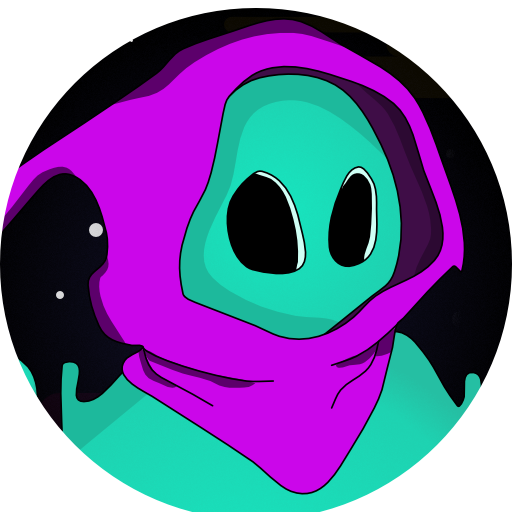

Welcome to my work
Quartzified Utility Library
Original Creator
C# Utility Library for Unity with great amount of methods to improve the overall working experience.
GitHub
QuickKeep
Original Creator
It's just like PlayerPrefs with more control and easier to handle.
GitHub
Global Notifications
Original Creator
Quick way to have all notifications run through one lane.
GitHub
Quartzified Hierachy
Forked Project
Extension to improve the Hierarchy Window. Adds useful detail to the Hierarchy while keeping it clean.
GitHub
Quartzified Inspector
Forked Project
Extension to improve the Inspector Window. Adds useful detail to the Inspector.
GitHub
Quartzified World Editor
Original Creator
Editor extension to improve the base object interaction in Unity.
GitHub
Quartzified UI
Original Creator
Adds simple UI components allowing quick unique interactions not available by default.
GitHub
Quartzified Audio
Original Creator
A simple Audio extension for unity that runs like clockwork.
GitHub
Quartzified Twitch Chat
Original Creator
Editor Extension adding a Twitch Chat window to Unity.
GitHub
Simplified Twitch Client
Original Creator
A simple way to connect your game with twitch in a single setup.
Not Available Yet